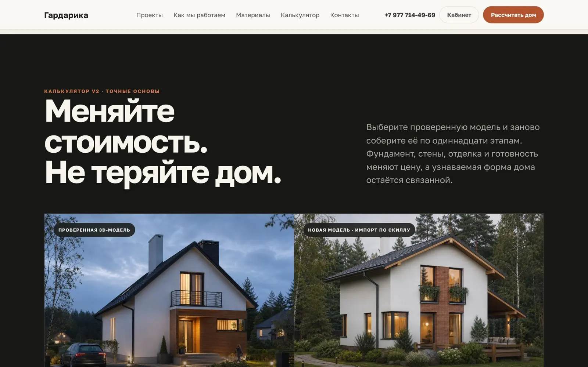

Home page and entry to the configurator
Гардарика
in progressArchitecture and construction bureau — project catalogue and house configurator
Behind the project
- Problem
- The live site runs on an e-commerce template: a shopping cart and «1 item» under every house project, a 25-item menu, and the price estimate promised on the first screen led nowhere.
- Solution
- A project catalogue with a page per house and an eleven-step configurator: a Three.js 3D model, floor plans generated from the same modules as the volume, and a preliminary estimate exported to PDF. Any catalogue house opens in the configurator as an editable base.
- Outcome
- The path «browse a project → configure your own → get an estimate» works without calling a sales rep. Currently in progress — happy to demo it on a call.
